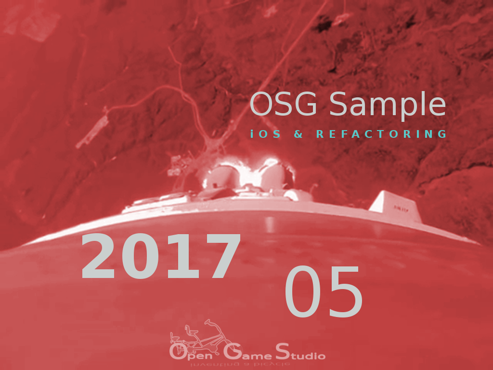

2017-06-08 10:00

This article describes problems we faced during the creation of iOS tutorial in May 2017.
This February we managed to get simple model rendered under iOS in just a few days. We expected to finish iOS tutorial in no time. However, the reality reminded us: it's easy to come up with a hackish demo that works for one person, but it's hard to create a concise example that works for everyone.
Native library
The first question we had to answer was: should the sample application be part of Xcode project or be a separately built library?
We had to consider the following facts:
After evaluating the pros and cons of each approach, we decided to turn the sample application into a library and include it in Xcode project. The downside of this approach is that simulator and real device builds need separate library builds.
Refactoring
The second question we had to answer was: should there be a single source code base for all platforms or several ones, one for each platform?
While doing Android tutorial we used single source code base because it worked fine for desktop and Android. As we started to work through iOS tutorial, it became apparent that particular features may or may not work on some platforms. For example, one feature may work on desktop and iOS, but not Android. Another feature may work on iOS and Android, but not desktop. Since we didn't want to pollute the code with #ifdefs, we started to put each platform combination into a separate file. The number of files grew rapidly. The files were reusable, but it became extremely hard to see the whole picture.
At this point, we realized there's the second question. We reminded ourselves that the main purpose of the sample source code is to teach how to do basic OpenSceneGraph things, not create a reusable library with API that is stable across several years.
That's when our home grown feature tool came into play. With its help, we separated the code into several parts, which in the end produce just two files for each platform:
Their contents differ slightly for each platform, but it's easy to see the whole picture now.
That's it for describing problems we faced during the creation of iOS tutorial in May 2017.